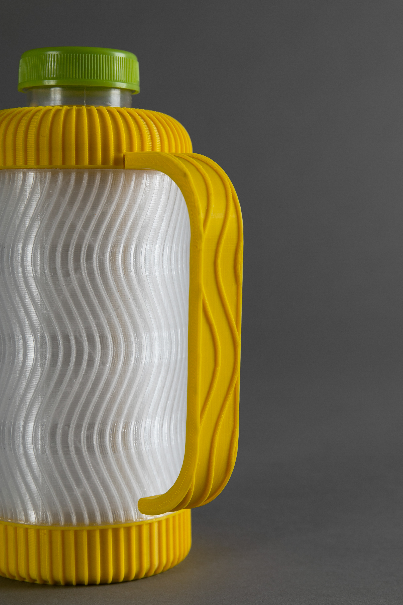
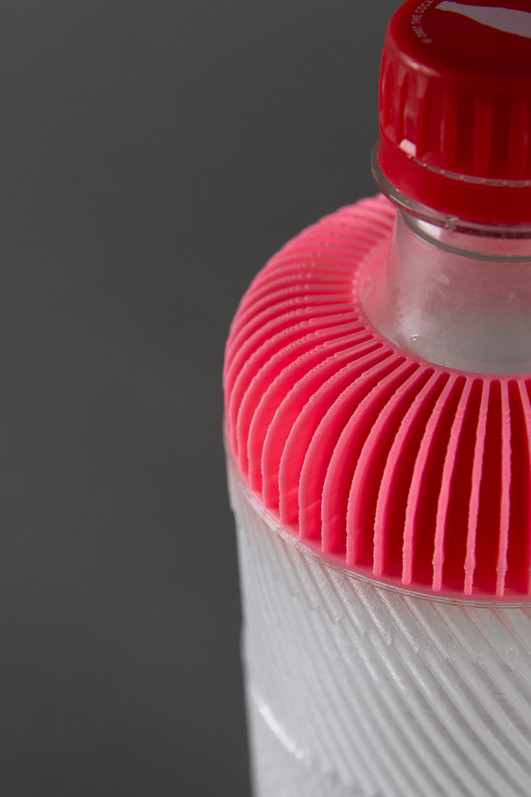
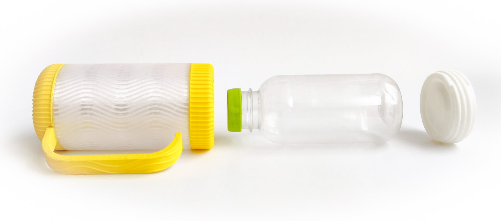

Bottle++
Personalizing water bottles with 3D printing



In a studio course on water bottle design at Bezalel Academy, I envisioned a system that augments plastic bottles with 3D-printing and personalization: Bottle++

The system profiles a user through a set of interfaces, and automatically personalizes a compelling water bottle for them.

For example, it could fit the bottle to the cup holder in their car, add a handle to secure the grip in their trembling hand, create a texture that visually matches their outfit, and more.

Finally a 3D model is generated and printed from recycled materials. It wraps around an existing plastic bottle, which is now more likely to be reused.
The studio was supervised by Maya Ben David, and throughout the course I utilized parametric design platforms like OpenSCAD, Fusion360, Grashopper and Onshape.
The full project report can be found here, and you’re welcome to watch my presentation recording here (it’s in Hebrew). If you’re into 3D stuff, check out my models here.

-2.jpg)
-2.jpg)